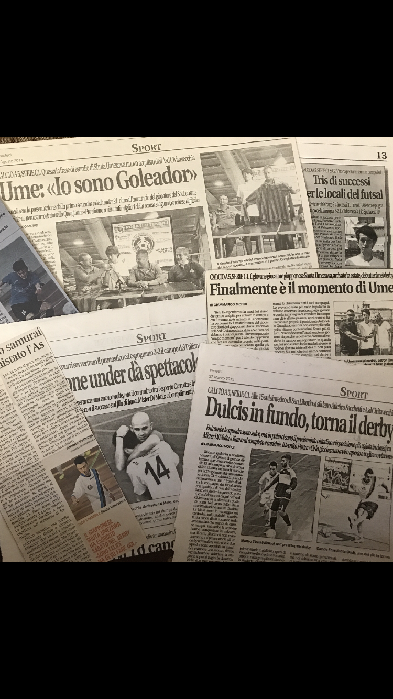

PROFILE

NAME：Umezawa Shuta
BIRTH：1994
2017-2020 株式会社イー・トラックス
2020-2022 株式会社セブン-イレブン・ジャパン
2022-現在 株式会社NGK
略歴：
フットサルプレーヤーとして活動するため、20歳時にイタリアへと渡り1年間活動したのち、
大阪、仙台で活動後、23歳時に引退。
パソコン教室の教室責任者からキャリアをスタートさせ、コンビニ専門の経営コンサルタントを経て、
社内SEとしての現在にいたる。
BIRTH：1994
2017-2020 株式会社イー・トラックス
2020-2022 株式会社セブン-イレブン・ジャパン
2022-現在 株式会社NGK
略歴：
フットサルプレーヤーとして活動するため、20歳時にイタリアへと渡り1年間活動したのち、
大阪、仙台で活動後、23歳時に引退。
パソコン教室の教室責任者からキャリアをスタートさせ、コンビニ専門の経営コンサルタントを経て、
社内SEとしての現在にいたる。



POLICY
SKILL
.png)
課題解決に必要な要素として、
「ビジネススキル」
「実行スキル（ドメインスキル）」
「ヒューマンスキル」の3つのスキルが重要であると考えている。
プロジェクトマネージャーは、3つのスキル全てがあることが望ましいが、
優先順位をつけるなら
「ヒューマンスキル」
＞「ビジネススキル」
＞「実行スキル（ドメインスキル）」
の順番で、それぞれのスキルが求められる役割だと考えている。
ヒューマンスキル
大事だと考えているスキル
| スキル |
|---|
| 読解力 |
| 論理的読解力 |
| 情緒的読解力 |
| 詭弁力 |
| 具体⇔抽象化 力 |
| 発想力 |
| 批判的思考力 |
| 水平思考力 |
| 具体⇔抽象化 力 |
| 伝達力 |
| 論理的伝達力 |
| 情緒的伝達力 |
| 詭弁力 |
| 具体⇔抽象化 力 |
qualitative skills
定性的なスキル
| 技術 | 経験年数 | スキル |
|---|---|---|
| javascrpt | 2年 | |
| jQuery | 2年 | |
| AngularJS | 1年 |
quantitative skills
定量的なスキル
| 技術 | 経験年数 | スキル |
|---|---|---|
| VB.NET | 1年 | |
| php5.6,7(Laravel) | 1年 |
DB
直近ではMySQLを使用しました。
| 技術 | 経験年数 | スキル |
|---|---|---|
| Oracle | 2年 | |
| MySQL | 1年 |
インフラ・サーバー
awsではEC2、RDS、cloudwatch等を触っています。
| 技術 | 経験年数 | スキル |
|---|---|---|
| Apache | 1年 | |
| aws(EC2、RDS等) | 1年 |
その他
開発等で使用したツールやFWです。
| 技術 | 経験年数 | スキル |
|---|---|---|
| monaca(cordova) | 1年 | |
| Swagger | 1年 | |
| git | 1年 | |
| SVN | 1年 | |
| slack | 2年 | |
| Postman | 1年 |
保有資格
| ITパスポート |
|---|
| Excel VBAスタンダード |
| 統計検定2級 |
| kintone カスタマイズSP |
| kintone アプリデザインSP |
| イタリア語検定3級 |
| FP3級（実技） |
currently committed
習得予定
現在勉強中、これから注力していきたいこと
| 項目 | ||
|---|---|---|
| 英語 | 1年 | |
| CSS3 | 1年 |
WORKS
人事評価支援システム開発・販売・運用
Product Management
・市場調査
・ベンダーとのコミュニケーション
・要求整理
・要件定義
・要件定義書など各種ドキュメント作成
・マニュアル作成
・ユーザー説明会の実施
・ヘルプサイト制作→改善点分析
・ヘルプデスク
・ユーザインタビュー
・インシデント管理 体制構築・運用
・SLO/利用規約の作成
・サポートツールの作成(Excel VBA)

kintone 運用改善
Project Management
・要求整理
・要件定義
・要件定義書など各種ドキュメント作成
・カスタマイズファイル作成（javascript）
・マニュアル作成